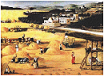
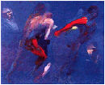
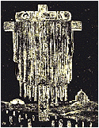
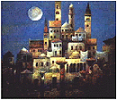
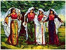
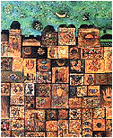
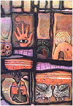
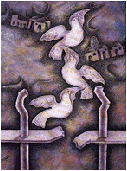
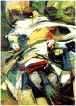

| Shammout.com I s m a i l Biography Selected Paintings 1950-1959 1960-1969 1970-1979 1980-1989 1990-1999 Sketches Computer Graphics Exhibitions T a m a m Biography Selected Paintings Sketches Exhibitions G u e s t b o o k Guestbook View all entries C o n t a c t u s Shammout O t h e r R e l a t e d T o p i c s Art in Palestine What's new |
 One of those was Ismail Shammout. In 1948,this young man of 18 years joined his Lydda townfolk in their infamous march to exile. After two years of life in a Gaza refugee camp, he managed to go to Cairo, where he was enrolled in the College of Fine Arts. However, he would soon discover that he was only physically removed from the refugee camp and that the "Palestinian" in him prevailed. His work in the College would be influenced by images of human suffering, which were captured by his artist's eye during his people's exodus and later during their life of misery and despair in the refugee camp. The Egyptian models which he drew or painted during study, with their distinctive Egyptian features and dresses, would automatically be converted into Palestinian "themes" or "Palestinian looks"...  The exhibition was not only successful but had become a Palestinian "event". People of all walks of lire rushed to visit. To the young promising talents, the exhibition constituted a source of inspiration and motivation to go out and develop their talents. To the public, it was a moment of intense emotional feelings coupled with pride, as they saw one of their kin graduating to the ranks of established and recognized artists. To Shammout, it was a great boost to his self-confidence as well as to his belief in art, its inspirational capabilities and its value as an instrument of national struggle.  The initial encounter between Shammout and Akhal led to a more durable union between the two artists. In 1959, they were married and, as the years went by, they became a very well-known husband/wife team in Arab and international art circles.  In the mid fifties, and in the footsteps of Shammout and Akhal, numerous Palestinian talents proceeded to study arts in whatever academies and institutes of fine arts that could be made available to them. By the early sixties, there were scores of arts graduates who became quite active in the Palestinian congregation centres in both the West Bank and Gaza strip as well as in other Arab countries.  Paintings of the fifties belonged to the realistic expressionist school, with little application of symbolism. The reasons were two-fold. Firstly, Arab art academies taught art in accordance with academic methods, i.e. imitating the visual perspective of objects. Secondly, the artists of that period were the survivors of the terrible 1948 war, the dwellers of squalid refugee camps. They studied art not as fine art, nor for art's sake, but to better convey their feelings through it, to portray their suffering as Palestinians, to express their aspirations as people striving to regain their homeland.  New Climate- New Horizons With the advent of the sixties, a new climate-a change of wind - was being felt by the Palestinians. The Palestinian personality, the lost Palestinian identity, were being reasserted. Armed organizations were formed. Palestinian men and women rushed to fill their ranks. The Palestine Liberation Organization was declared, the first shot was fired and the Palestinian revolution-the Palestinian armed struggle - was underway. The Palestinian artists stood at the forefront of the budding movement. Their works during the period reflected images of a dawning revolution. They provided a foretaste of the coming events. This constituted a clear, unmistakable evidence of the Palestinian artist's oneness with the Palestinian cause, of his capacity to foretell his people's course of action, a capacity derived from his constant involvement with his cause and full awareness of all developments pertinent thereto.  This signalled a new era for the Palestinian artist. Prior to the establishment of the PLO, the Palestinian art activity was exclusively dependent on the artist's own effort, his own capability, however limited. After the PLO, his lot greatly improved, as he became, for the first time, the eligible recipient of institutional patronage and support. The Following facilities and opportunities were also provided.  4-Allocation of grants for promising young talents to study art in colleges and institutes of friendly donor countries. These
new developments had a marked effect on the Palestinian
art output, both in form and in content. In form, the
painting broke loose from the realistic  As to content, the Palestinian theme would remain the core around which all other secondary themes would rotate. The painting, however, had been freed from the "tragedy" tone, which characterized the works of the early fifties. The flow of young Palestinian talents, seeking to study art in Arab and foreign arts academies and institutes went on unabated. A recent census revealed that in the period from 1948 to the mid-eighties, a total of 340 Palestinian men and women had enrolled in arts, applied arts and art education classes, including more than fifty females. Two-thirds of those joined Arab colleges, while close to one hundred students sought education abroad. |